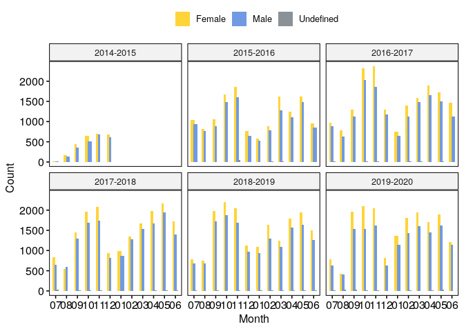

Customize every detail
Contents
Customize every detail¶
Load data¶
One of the greatest things of R data visualization is its community.
There are many open-source projects going on that revolve around getting
started and improving our data viz skills. One of my favorite projects
is tidytuesday, a
challenge consisting of sharing toy datasets, plotting them and posting
them together with the corresponding code on twitter with the hashtag
#tidytuesday.
They even share videos on
how to reproduce plots made by others just by looking at their final
plot! I think this is a great resource to get inspired, getting to know
new possibilities, and training. There are people that have made this a
weekly ritual! I recommend you to follow this twitter
bot to check out people’s ideas.
One of my favorite R plotters is
Cedric Scherer, who has become a
guru of data visualization. Check out his webpage!
Here, we will use the toy dataset from 2022/03/08 on EU student mobility, describing the movements of students throughout the ERASMUS program.
require(tidyverse)
require(ggpubr)
dat_url = "https://raw.githubusercontent.com/rfordatascience/tidytuesday/master/data/2022/2022-03-08/erasmus.csv"
dat = read_csv(dat_url)
dat %>% head(1) %>% t()
## [,1]
## project_reference "2014-1-AT02-KA347-000139"
## academic_year "2014-2015"
## mobility_start_month "2014-11"
## mobility_end_month "2014-11"
## mobility_duration "1"
## activity_mob "National youth meetings"
## field_of_education "? Unknown ?"
## participant_nationality "AT"
## education_level "??? - ? Unknown ?"
## participant_gender "Female"
## participant_profile "Learner"
## special_needs "No"
## fewer_opportunities "Yes"
## group_leader "No"
## participant_age "13"
## sending_country_code "AT"
## sending_city "Dornbirn"
## sending_organization "bOJA - Bundesweites Netzwerk Offene Jugendarbeit"
## sending_organisation_erasmus_code "-"
## receiving_country_code "AT"
## receiving_city "Dornbirn"
## receiving_organization "bOJA - Bundesweites Netzwerk Offene Jugendarbeit"
## receiving_organisation_erasmus_code "-"
## participants "2"
Explore the data using the functions introduced.¶
Freestyle time! Try out the functions from ggpubr that we introduced
earlier to get some answers from this dataset (e.g. what is the most
common connection?).
# mobility troughout years and months by gender
plt = dat %>%
mutate(month=gsub(".*-","", mobility_start_month)) %>%
count(academic_year, month, participant_gender) %>%
ggbarplot(x="month", y="n", fill="participant_gender", palette="simpsons",
facet.by="academic_year", position=position_dodge(0.5), color=NA) +
labs(x="Month", y="Count", fill="")
plt

ggplot2 in depth: @KittJonathan’s version¶
To exemplify how projects like tidytuesday can help us learning new
ways of plotting in R, I have copy-pasted
@KittJonathan’s version of the
challenge:
https://github.com/KittJonathan/tidytuesday/blob/master/R/2022_03_08_erasmus.R.
In this github page you’ll find many more cool visualizations!
NOTE: you’ll need to install several extra packages to be able to run it:
showtext: edit fonts more easily in R graphs.countrycode: get country code names.
erasmus = dat
require(showtext)
require(countrycode)
# Load fonts ----
font_add_google(name = "Comfortaa", family = "Comfortaa")
showtext_auto()
# Data wrangling ----
country_codes <- codelist %>%
select(iso2c, country_name = country.name.en)
d1 <- erasmus %>%
filter(participant_nationality == "FR", # keep data for french students
receiving_country_code != "FR") %>% # keep mobilities abroad
select(receiving_country_code, participants) %>% # remove unwanted columns
left_join(country_codes, by = c("receiving_country_code" = "iso2c")) %>% # add sending country name
mutate(country_name = case_when(receiving_country_code == "EL" ~ "Greece", # add missing country names
receiving_country_code == "UK" ~ "United Kingdom",
receiving_country_code == "CZ" ~ "Czech Republic",
TRUE ~ country_name)) %>%
group_by(country_name) %>% # group data by country name
mutate(total = sum(participants)) %>% # count total number of participants for each receiving country
filter(row_number() == 1) %>% # keep 1 row by receiving country
arrange(desc(total)) %>% # arrange data by descending order
ungroup() %>% # ungroup data
mutate(percent = 100 * total / sum(total)) %>% # calculate ratio
mutate(country_name = factor(country_name, levels = rev(country_name))) %>% # set levels %>%
head(10) # keep top 10 destinations
# Create plot ----
p <- ggplot(data = d1,
aes(x = country_name, y = total, fill = country_name)) +
geom_bar(width = 0.9, stat = "identity", show.legend = FALSE) +
scale_fill_manual(values = rep(c("#3caea3", "#173f5f"), 5)) +
coord_polar(theta = "y", start = 0) +
xlab("") +
ylab("") +
labs(caption = "Visualisation : Jonathan Kitt | Data source : Data.Europa | #TidyTuesday 2022 week 10") +
geom_text(aes(x = country_name, y = 0, label = paste0(country_name, " - ", round(percent, digits = 1), " %")),
hjust = 1.05, family = "Comfortaa", size = 10, colour = rep(c("#173f5f", "#3caea3"), 5)) +
ggtitle(label = "Where do french students prefer to go ?",
subtitle = "Top 10 destinations for french ERASMUS participants (2014-2020") +
ylim(c(0, 250)) +
theme_void() +
theme(plot.background = element_rect(fill = "#d6ecef", colour = "#d6ecef"),
panel.background = element_rect(fill = "#d6ecef", colour = "#d6ecef"),
plot.title = element_text(family = "Comfortaa", size = 60, colour = "#173f5f", hjust = 0.5,
margin = margin(t = 20)),
plot.subtitle = element_text(family = "Comfortaa", size = 30, colour = "#173f5f", hjust = 0.5),
plot.caption = element_text(colour = "#173f5f", size = 20, hjust = 0.5,
margin = margin(b = 20)))
ggsave("images/2022_03_08_erasmus.png", p, dpi = 320, width = 12, height = 6)

References¶
Session Info¶
sessionInfo()
## R version 4.1.2 (2021-11-01)
## Platform: x86_64-pc-linux-gnu (64-bit)
## Running under: Ubuntu 18.04.6 LTS
##
## Matrix products: default
## BLAS: /usr/lib/x86_64-linux-gnu/openblas/libblas.so.3
## LAPACK: /usr/lib/x86_64-linux-gnu/libopenblasp-r0.2.20.so
##
## locale:
## [1] LC_CTYPE=en_US.UTF-8 LC_NUMERIC=C
## [3] LC_TIME=en_GB.UTF-8 LC_COLLATE=en_US.UTF-8
## [5] LC_MONETARY=en_GB.UTF-8 LC_MESSAGES=en_US.UTF-8
## [7] LC_PAPER=en_GB.UTF-8 LC_NAME=C
## [9] LC_ADDRESS=C LC_TELEPHONE=C
## [11] LC_MEASUREMENT=en_GB.UTF-8 LC_IDENTIFICATION=C
##
## attached base packages:
## [1] stats graphics grDevices utils datasets methods base
##
## other attached packages:
## [1] countrycode_1.3.1 showtext_0.9-5 showtextdb_3.0 sysfonts_0.8.5
## [5] ggpubr_0.4.0 forcats_0.5.1 stringr_1.4.0 dplyr_1.0.8
## [9] purrr_0.3.4 readr_2.1.2 tidyr_1.2.0 tibble_3.1.6
## [13] ggplot2_3.3.5 tidyverse_1.3.1
##
## loaded via a namespace (and not attached):
## [1] Rcpp_1.0.8 lubridate_1.8.0 assertthat_0.2.1 digest_0.6.29
## [5] utf8_1.2.2 R6_2.5.1 cellranger_1.1.0 backports_1.4.1
## [9] reprex_2.0.1 evaluate_0.15 highr_0.9 httr_1.4.2
## [13] pillar_1.7.0 rlang_1.0.2 curl_4.3.2 readxl_1.3.1
## [17] rstudioapi_0.13 car_3.0-12 rmarkdown_2.12 labeling_0.4.2
## [21] bit_4.0.4 munsell_0.5.0 broom_0.7.12 compiler_4.1.2
## [25] modelr_0.1.8 xfun_0.30 pkgconfig_2.0.3 htmltools_0.5.2
## [29] tidyselect_1.1.2 fansi_1.0.2 crayon_1.5.0 tzdb_0.2.0
## [33] dbplyr_2.1.1 withr_2.5.0 grid_4.1.2 jsonlite_1.8.0
## [37] gtable_0.3.0 lifecycle_1.0.1 DBI_1.1.2 magrittr_2.0.2
## [41] scales_1.1.1 cli_3.2.0 stringi_1.7.6 vroom_1.5.7
## [45] carData_3.0-5 farver_2.1.0 ggsignif_0.6.3 fs_1.5.2
## [49] xml2_1.3.3 ellipsis_0.3.2 generics_0.1.2 vctrs_0.3.8
## [53] ggsci_2.9 tools_4.1.2 bit64_4.0.5 glue_1.6.2
## [57] hms_1.1.1 parallel_4.1.2 abind_1.4-5 fastmap_1.1.0
## [61] yaml_2.3.5 colorspace_2.0-3 rstatix_0.7.0 rvest_1.0.2
## [65] knitr_1.37 haven_2.4.3